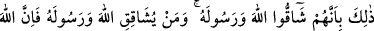

meydanlarında sebata ve savaşın zorluklarına karşı ciddiyeti muhafazaya teşvik
etmekten ibarettir.
“Ben kâfirlerin yüreğine korku salacağım.” yani Ben kâfirlerin kalbine müminlerin
korkusunu atacağım. Bu söz, meleklere müminleri nasıl sebat ettireceklerine dair bir
telkindir. Yani müminlere benim bu sözümü söyleyin, demektir.
Ey müminler siz de “vurun boyunlarına!” kâfirlerin boyunlarına veya kafalarına
vurun. Çünkü bu âyette meleklerin savaştığına dair bir işaret yoktur. Haddâdî der ki:
“Allah Teâlâ onların boyunlarının vurulmasını emretmiştir. Çünkü boynun üst kısmı
öldürmek için vurulan yerdir.”
“Vurun onların bütün parmaklarına!” “” lugatte parmaklar ile insanın ayakta
durmasını ve hayatını sağlayan diğer uzuvlar mânâsına gelir. Buna göre: “Onların
tepeden tırnağa bütün âzâlarına vurun!” demektir. Denilmişdir ki: Doğru olan, bununla
müdafaa ve savaşın kasdedilmiş olmasıdır. Nitekim Taftâzânî de böyle demiştir. “diye
vahyediyordu.” Vahiy; gizli bir yolla nefse mânâyı ilka etmektir.
13. Bu, onların Allah’a ve Rasûlü’ne karşı gelmelerinden ötürüdür. Kim Allah ve
Rasûlü’ne karşı gelirse, bilsin ki Allah azabı şiddetli olandır.
“Bu,” boyunlarının vurulması, öldürülmeleri ve cezalandırılmaları “onların” mağlup
edilmeleri asla mümkün olmayan “Allah’a ve Rasûlü’ne karşı gelmelerinden
ötürüdür.” muhalefet etmeleri ve üstün gelmeye çalışmaları sebebiyledir.
Şeyhzâde, Allah’a karşı gelmekten maksadın Allah’ın dostlarına karşı gelmek
olduğunu söyler.
Âyette kişinin dünyada ve ahirette elde ettiği her türlü saadet ve şekavete kendi
kesbinin, gayretinin etkisi olduğuna işaret vardır.
“Kim Allah ve Rasûlü’ne karşı gelirse,” Allah ve Rasûlü’nün dostlarına muhâlefet
ederse “bilsin ki” onun için “Allah azabı şiddetli olandır.”
14. İşte siz şimdi onu tadın. Kâfirlere cehennem azabı da vardır.
“İşte” Allah’ın hükmü budur. Yani, sizin hemen bu azabı tatmanıza, ahirette de
cehennem azâbına mâruz kalmanıza hükmetmiştir.
“siz şimdi onu tadın. Kâfirlere cehennem azabı da vardır.” Dünya azabı hakkında